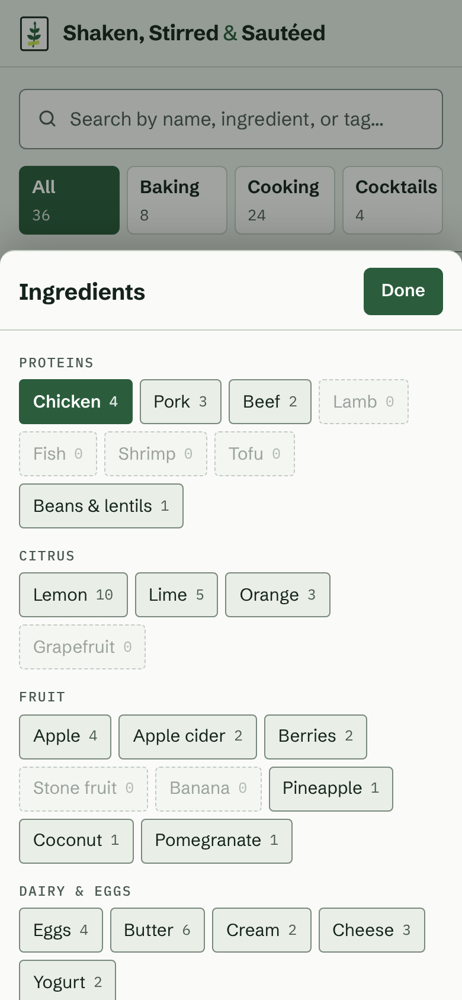
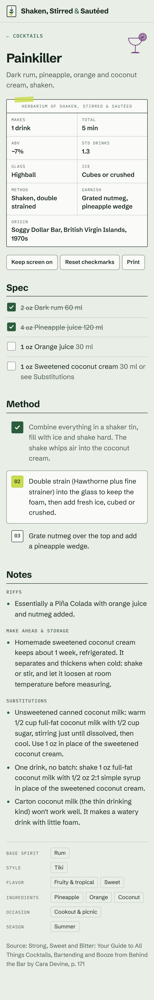
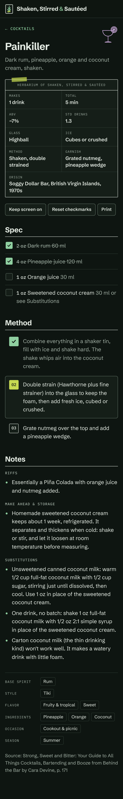
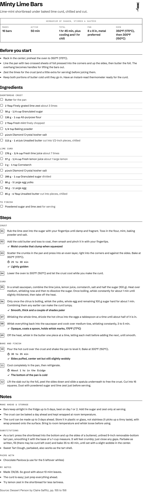

Brand direction · Round two
Field Guide
The recipe collection as a kitchen herbarium. Every recipe is a specimen sheet, the three sections are families, and the facts sit on a small archival label. Cool paper, botanical ink, one fresh lime accent. Calm, precise and easy to read at the stove.
Concept
Look at what is actually in these recipes: mint in the lime bars, parsley and oregano in the chimichurri, cilantro and dill in the green tahini, lemon in the curd, the tart and the asparagus, lime and orange in the drinks, apples in the donuts and the cider. This is a collection of plants. A herbarium is how botanists keep plants: each one pressed on its own sheet, labelled with a small ruled box of facts, and filed by family.
That gives the site a structure, not a costume. A recipe card is a specimen sheet with an accession number. The recipe page has a real specimen label for its facts. Baking, Cooking and Cocktails are families, each with one fine-line plate drawing. Ingredients are catalogued and ticked off. Everything else stays quiet so the recipe is easy to read.
It is deliberately not antique. There is no cream, no terracotta, no old-style serif, no foxing or sepia. The paper is a cool green-grey, the ink is a deep herb green, and the type is a sturdy modern grotesk. It should feel like a well-kept field guide from this year.
- One idea, used structurally.Specimen sheet, specimen label, families. No props.
- Type and color carry it.Schibsted Grotesk to read, IBM Plex Mono for label fields. Ink green on cool paper.
- Two signature details only.The ruled specimen label, and the fine-line family plate.
- Lime means "now".The current step, a filter count, one strip of specimen tape. Nowhere else.
- Readable first.17px body, AA or better everywhere, 38px+ touch targets.
What changed from round one, and why
Field Guide is a new direction, built on what you said about round one. The herbarium idea was set aside last time because it drifted toward the current warm serif-on-paper look. This version changes the materials, not just the drawings.
- A real-world document as the structure: the specimen sheet, like the ticket.
- Easy, sturdy type with a mono for small fields.
- A highlighter for the step you are on.
- Plain lines and tidy rows, so you can read it at arm's length.
- No gold, no hairline Didone, no script. Nothing hotel-like. Even baking is blueberry blue, not wheat-gold.
- No repeating trim or patterned borders (Tin-Glaze).
- No halftones, stickers or stacked effects (Overprint).
- No barcodes, torn edges or rails on every card (Order Up).
- No cream or terracotta: paper is cool green-grey
#E9EEE7. - No serif: Schibsted Grotesk for everything you read.
- Drawings are fine single-weight lines, not engravings or clip-art.
- The botanical idea shows in four places only: label, plate, accession number and tape.
Logo
The mark is a herbarium sheet in miniature: a sprig pressed on a sheet and held down by one strip of lime specimen tape. Filled leaves keep it legible at favicon size. It is drawn for this brand and replaces the cocktail-glass emoji in the header. The wordmark is Schibsted Grotesk Bold with the ampersand in herb green at medium weight.
- Don't outline the leaves or add more of them. It stops reading at 16px.
- Don't recolor the tape in anything but lime. It's the only lime in the mark.
- Don't put the mark on photos or patterns. Paper or ink only.
- Keep clear space of half the mark's width on every side.
Color
Cool, botanical and few. Ink green and graphite on green-grey paper do almost all the work. Herb green marks what you chose or finished. Lime is the one fresh accent: it marks what's happening now and is only ever a fill behind ink, never text. Each family has one color, used on its badge and its plate. Ratios are WCAG 2.1 contrast, computed from the hex values.
Light
- --bg
#E9EEE7Mounting board. The page.13.7:1AAA · ink on it - --surface
#FAFBF8Specimen sheet. Cards, labels, sheet.15.6:1AAA · ink on it - --surface-2
#DFE6DCPressed. Sunken fills, code.12.7:1AAA · ink on it - --text
#15241BBotanical ink. Body and headings.13.7:1AAA · on board - --muted
#4B5A50Graphite. Descriptions, label fields.6.2:1AA · on board - --border
#C5CFC2Hairline rules between things.—decorative - --rule-strong
#7A897EControl edges: inputs, buttons, chips.3.1:1UI 3:1 · non-text, on board - --accent
#2B5D3DHerb green. Links, chosen, done.6.5:1AA · as text on board - --lime
#CADD4CFresh accent. Now and marked. Fill only.10.7:1AAA · ink on it - --baking
#2F5485Family: baking (blueberry, cyanotype blue).6.3:1AA · on its tint - --cooking
#2B5D3DFamily: cooking (leaf).6.1:1AA · on its tint - --cocktails
#6A3477Family: cocktails (pressed berry).7.1:1AAA · on its tint
Dark
- --bg
#0E1511Mounting board. The page.15.1:1AAA · ink on it - --surface
#151E18Specimen sheet. Cards, labels, sheet.13.9:1AAA · ink on it - --surface-2
#1E2A22Pressed. Sunken fills, code.12.2:1AAA · ink on it - --text
#E3EAE2Botanical ink. Body and headings.15.1:1AAA · on board - --muted
#A3B1A6Graphite. Descriptions, label fields.8.3:1AAA · on board - --border
#2B3830Hairline rules between things.—decorative - --rule-strong
#5F7064Control edges: inputs, buttons, chips.3.5:1UI 3:1 · non-text, on board - --accent
#8FCFA0Herb green. Links, chosen, done.10.2:1AAA · as text on board - --lime
#C6DA52Fresh accent. Now and marked. Fill only.11.9:1AAA · ink on it - --baking
#A9C3ECFamily: baking (blueberry, cyanotype blue).8.6:1AAA · on its tint - --cooking
#8FCFA0Family: cooking (leaf).7.8:1AAA · on its tint - --cocktails
#D4B0E4Family: cocktails (pressed berry).8.1:1AAA · on its tint
Family tints: baking #E2E9F3 / #1A2536, cooking #DBE9D8 / #17301F, cocktails #EFE3F1 / #2D2135 (light / dark). On-accent text is white in light mode (7.7:1) and board-dark in dark mode (10.2:1). Focus rings are herb green in light mode and lime in dark mode.
Type
A sturdy, open grotesk with a slightly bookish build. Big counters and clear figures make quantities and times easy to read at a glance. Headings are 700 with tight tracking; body is 400 at 17px.
Aa Bb Cc Gg Qq Rr · 0123456789 · ½ ¼ ° × – “ ” é ñThe voice of the specimen label: field names, accession numbers, quantities, counts and timers. Always small and usually uppercase with open tracking. Never used for sentences.
TIME · YIELD · 2 oz · 60 ml · 25 to 30 min| Recipe title | Chimichurri Sauce | clamp(2rem, 8vw, 2.9rem) / 1.04 · 700 · −0.028em |
|---|---|---|
| Section | Ingredients | 1.45rem · 700 · 1.5px ink rule |
| Card title | Green Tahini Sauce | 1.28rem / 1.18 · 700 |
| Body | Whisk the yolks, whole egg and sugar hard for about 1 min. | 17px / 1.55 · 400 |
| Secondary | Tahini blended with fresh herbs, garlic, lemon and green chile. | 0.92–0.95rem · graphite |
| Quantity | 2 oz Dark rum | Plex Mono 500 · 0.9em |
| Label field | Herbarium of Shaken, Stirred & Sautéed | Plex Mono · 0.64–0.78rem · caps · +0.09em |
Spacing, radius, lines and icons
- 4
- Inside badges and counts
- 6
- Gaps between chips and tabs
- 12
- Card grid gap, label padding
- 16
- Page gutter, card padding
- 24
- Around the specimen label
- 32
- Between recipe sections
- 56
- Between guide sections
- 2px
- Specimen labels: nearly square
- 3px
- Badges, checkboxes, step boxes
- 4px
- Cards, chips, options
- 6px
- Controls: search, tabs, buttons
- 12px
- Top of the bottom sheet
- 1px border
- Hairlines between rows
- 1px rule-strong
- Edges of things you tap
- 1.5px ink
- Specimen label and section heads
No drop shadows at rest. A soft lift on hover only.
Plates and glyphs
Four fine-line plates, drawn as single-weight strokes with vector-effect: non-scaling-stroke, so the line stays 1.5px at any size. They are used as CSS masks, so they take any token color. Use them at 56px or larger: one per recipe page (top right, in the family color) and one in the empty state. Small UI glyphs are three data-URI masks. The emoji the scripts print (timer, plate, sun, printer, book) are hidden by the theme, so the UI never mixes emoji with the drawings.
Components
These use the real theme.css classes and the same markup the scripts produce. Tap them: tabs, options and steps respond.
Family badge top left, accession number top right (it counts the visible results), title, one-line description, and a small ruled label with Time and Yield. No photos are needed; if one is added it sits above the body at 16:10.
Four equal tiles on a phone, a row on desktop. The chosen family is a solid herb-green tile. Counts are in mono.
Outlined at rest. In use: green outline plus a lime count. Open: ink outline. Active chips repeat the selection and remove it with one tap.
Ingredients
Herbs
Citrus
Slides up from the bottom on a phone over a green-black scrim; on desktop the same panel drops down under its button. Chosen options fill herb green; empty ones go dashed and faint.
Buttons are outlined, sentence case, 600 weight; pressed is solid green. Badges are mono caps on the family tint; Component is outlined so it never competes with the family.
- Makes
- 16 bars
- Active
- 50 min
- Total
- 1 hr 45 min, plus chill
- Pan
- 8 x 8 in, metal
- Oven
- 350°F (175°C)
The signature component. A 1.5px ink box with a centered header line, like a herbarium label, then the facts as ruled fields. One short strip of lime tape holds its top edge. It appears once per recipe.
Shortbread crust
Quantities in mono, item in sans, notes in graphite. Ticked: a green box with a white check, and the line is struck through and greyed so what's left stands out.
- Rub the lime zest into the sugar until damp and fragrant.
- Scatter the crumbs in the pan and press into an even layer. Bake at 350°F (175°C).⏱ 25 to 30 min✓ Lightly golden
- Lower the oven to 300°F (150°C) and let the crust cool.
To do: numbered label box. Done: green box with a check, text in graphite. Now: a lime number on a raised sheet, the only lime in the steps. Waits are mono with a clock; cues are green with a tick.
Voice and microcopy
Calm, exact, a little scholarly. Write like the margin notes in a good field guide: what to look for, how long, how much. Plain words over clever ones. The botanical idea lives in the design, so the copy only nods to it in a couple of fixed places (the label header, the accession number) and never makes plant puns in instructions.
Cues describe what you will see, smell or feel (“Lightly golden”, “Coats a spoon”). Waits give a range (“25 to 30 min”). Sentence case everywhere except tiny label fields.
| Where | Copy |
|---|---|
| Header tagline | A kitchen field guide |
| Label header | Herbarium of Shaken, Stirred & Sautéed |
| Card number | No. 01 |
| Card label fields | Time · Yield |
| Empty search | Nothing matches that. Clear filters |
| Write | Not |
|---|---|
| Bake until lightly golden, 25 to 30 min. | Pop it in till it's perfectly golden and gorgeous! |
| Reset checkmarks | Start fresh, little sprout |
| Fresh mint, finely chopped | Mentha spicata, harvested at dawn |
| Keeps 5 days in the fridge. | Best enjoyed within the specimen's natural lifespan. |
Photography
The site works without photos, and that's the default. If you add some, shoot them like specimens: one subject, straight down or straight on, in cool daylight from a window, on a pale grey-green or white surface with room around it. Raw herbs, a cut lime or a whole lemon can sit beside the dish, the way a specimen sheet shows the fruit next to the leaf.
Cards crop to 16:10 and the recipe hero to 16:9, so keep the subject centered.
- YesDaylight, soft shadow, neutral cool surface, one dish, a few raw ingredients, a little negative space.
- NoWarm tungsten, rustic wood boards, linen and twine, heavy filters, crowded props, steam effects.
- CocktailsGlass on a plain surface, side-lit, garnish in focus. No bar backdrops.
Screens




How to adopt
The theme is a drop-in replacement for assets/style.css. No script changes are needed, and the page Content-Security-Policy stays as it is: no inline styles, no inline scripts, no font hosts.
- Copy
theme.csstoassets/style.css. - Copy the
fonts/folder toassets/fonts/, andplate-baking.svg,plate-cooking.svg,plate-cocktails.svgandplate-leaf.svgintoassets/. The stylesheet points to them with./paths, so they resolve next to it. - Copy
logo.svgtoassets/icon.svg, and re-exporticon-192.pngandicon-512.pngfrom it. - In
index.htmlandrecipe.html, replace the emoji brand mark with the inline SVG frompreview/index.htmland add the tagline span:<a class="brand" href="./"> <svg class="brand-mark" viewBox="0 0 40 48" …>…</svg> <span class="brand-name">Shaken, Stirred <span class="amp">&</span> Sautéed</span> <span class="brand-sub">A kitchen field guide</span> </a>
- Set the theme color:
<meta name="theme-color" content="#e9eee7" media="(prefers-color-scheme: light)">and#0e1511for dark. Inmanifest.webmanifestsetbackground_colorto#e9eee7andtheme_colorto#2b5d3d. - Bump
CACHEinsw.js(for example tosss-v2) so installed phones pick up the new look.